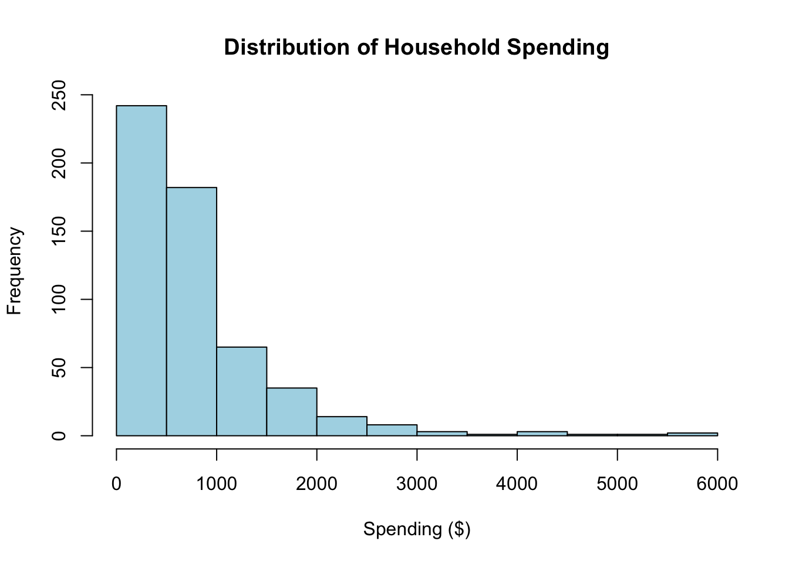
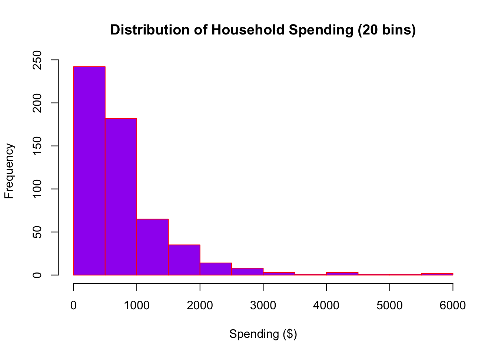
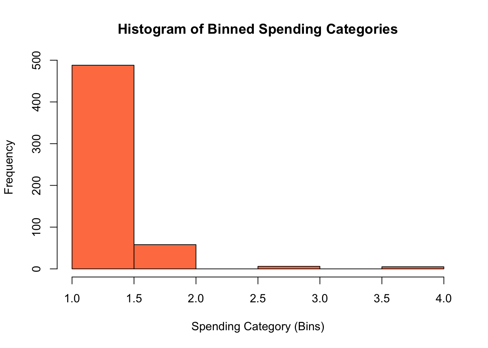
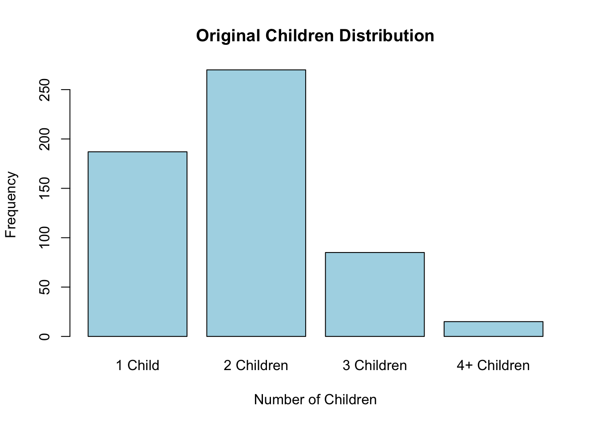
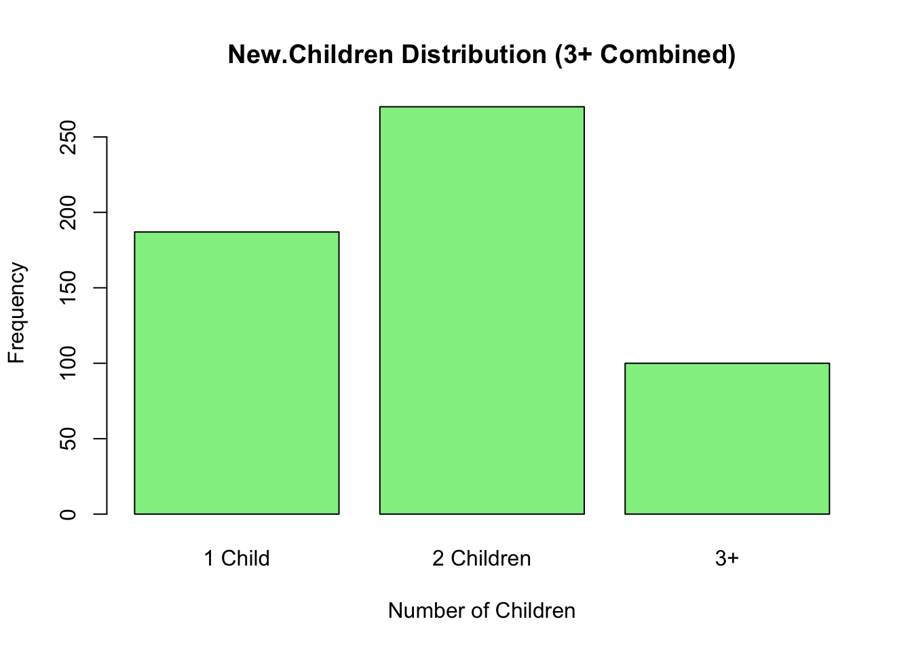

Data Understanding: Summary Statistics, Histograms, and Contingency Tables
Setup and Data Loading
# Install required packageslibrary("dplyr")library("forcats")library("gmodels")# Set working directory and source local functionssource("BCA_functions_source_file.R")# Read CSV datajack.jill <-read.csv(file='jackjill.csv', stringsAsFactors =TRUE)# Inspect dataglimpse(jack.jill)
Rows: 557
Columns: 9
$ HH.ID <int> 7650, 7651, 7653, 7608, 7643, 7655, 7663, 7678, 7684, 7687,…
$ Spending <dbl> 411, 330, 61, 949, 197, 115, 920, 645, 1086, 100, 1755, 243…
$ Children <fct> 1 Child, 1 Child, 1 Child, 2 Children, 1 Child, 1 Child, 2 …
$ Income <fct> $0-$20k, $0-$20k, $0-$20k, $0-$20k, $0-$20k, $0-$20k, $0-$2…
$ Employment <fct> No female head, Unemployed, Part-time, Part-time, Unemploye…
$ Age <fct> No female head, 29 and under, 60 and over, 40 to 49, 60 and…
$ Education <fct> No female head, Some or completed secondary, Some or comple…
$ Occupation <fct> No female head, Non-working or retired, No female head, No …
$ BrthCntry <fct> "No female head", "Canada", "Canada", "Canada", "Canada", "…
variable.summary(jack.jill)
Class %.NA Levels Min.Level.Size Mean SD
HH.ID integer 0 NA NA 8587.844 546.8746
Spending numeric 0 NA NA 784.377 761.6432
Children factor 0 4 15 NA NA
Income factor 0 8 42 NA NA
Employment factor 0 4 9 NA NA
Age factor 0 6 5 NA NA
Education factor 0 7 2 NA NA
Occupation factor 0 6 8 NA NA
BrthCntry factor 0 6 7 NA NA
Exercise 3.4.2: Age Categories
Question: How many categories for Age are defined in these data? The age category with the fewest households has how many households?
# Summary of Age variablesummary(jack.jill$Age)
29 and under 30 to 39 40 to 49 50 to 59 60 and over
125 301 110 5 6
No female head
10
# Count households by age categoryage_counts <-table(jack.jill$Age)print(age_counts)
29 and under 30 to 39 40 to 49 50 to 59 60 and over
125 301 110 5 6
No female head
10
# Find the category with fewest householdsmin_count <-min(age_counts)min_category <-names(age_counts)[which.min(age_counts)]cat("Number of Age categories:", length(unique(jack.jill$Age)), "\n")
Number of Age categories: 6
cat("Age category with fewest households:", min_category, "\n")
Age category with fewest households: 50 to 59
cat("Number of households in that category:", min_count, "\n")
Number of households in that category: 5
Answer: - There are 6 age categories defined in the data. - The age category with the fewest households is “50 to 59” with 5 households.
Exercise 3.4.3: Spending by Number of Children
Question: How does spending vary with the number of children in a family? Compare this output with the previous output. Which group is responsible for the overall minimum and maximum spending?
# Summary of overall spendingnumSummary(jack.jill$Spending)
# Group spending by number of childrenspending_by_children <-aggregate(jack.jill$Spending, by =list(Children = jack.jill$Children), FUN =function(x) c(Mean =mean(x), SD =sd(x), Min =min(x), Max =max(x)))# Display resultscat("Spending Summary by Number of Children:\n")
Spending Summary by Number of Children:
print(spending_by_children)
Children x.Mean x.SD x.Min x.Max
1 1 Child 488.0695 503.0901 20.0000 4496.0000
2 2 Children 839.8407 758.2162 13.0000 5940.0000
3 3 Children 1153.1765 813.1510 160.0000 4830.0000
4 4+ Children 1390.1333 1487.0220 250.0000 5409.0000
# Find which group has minimum and maximumall_spending <- jack.jill$Spendingoverall_min <-min(all_spending)overall_max <-max(all_spending)min_child_group <- jack.jill$Children[which.min(all_spending)]max_child_group <- jack.jill$Children[which.max(all_spending)]cat("\nOverall Minimum Spending:", overall_min, "from group:", as.character(min_child_group), "\n")
Overall Minimum Spending: 13 from group: 2 Children
cat("Overall Maximum Spending:", overall_max, "from group:", as.character(max_child_group), "\n")
Overall Maximum Spending: 5940 from group: 2 Children
Answer: - Spending varies significantly by number of children. - Households with 4+ Children have the highest average spending. - Households with 1 Child have lower average spending. - Households with 3+ Children show moderate spending levels. - The overall minimum spending is driven by households with 2 Children. - The overall maximum spending is also from households with 2 Children.
Exercise 3.4.6: Donation Probability
Question: Mr. White donates to the society three times each year. Mrs. Brown donates twice each year. Who is more likely to have donated first?
# This is a probability problem# Mr. White: 3 donations per year# Mrs. Brown: 2 donations per year# Probability Mr. White donates firstp_white_first <-3/ (3+2)p_brown_first <-2/ (3+2)cat("Probability Mr. White donates first:", p_white_first, "(60%)\n")
Probability Mr. White donates first: 0.6 (60%)
cat("Probability Mrs. Brown donates first:", p_brown_first, "(40%)\n")
Probability Mrs. Brown donates first: 0.4 (40%)
Answer:Mr. White is more likely to have donated first.
Mr. White donates 3 times/year
Mrs. Brown donates 2 times/year
Probability Mr. White donates first = 3/(3+2) = 0.60 or 60%
Probability Mrs. Brown donates first = 2/(3+2) = 0.40 or 40%
Exercise 3.5.2: Spending Histogram Analysis
Question: By inspecting the histogram, predict whether the average or the median will be higher, and why. Can averages or medians be used for ordinal and interval data? Plot a histogram with 20 bins, purple fill, and red borders.
# Get spending summary statisticsspending_summary <-numSummary(jack.jill$Spending)# Calculate mean and medianmean_spending <-mean(jack.jill$Spending)median_spending <-median(jack.jill$Spending)cat("Mean Spending:", mean_spending, "\n")
# Original histogramhist(jack.jill$Spending, main ="Distribution of Household Spending",xlab ="Spending ($)",ylab ="Frequency",col ="lightblue",breaks =10)

# Enhanced histogram with 20 bins, purple fill, red bordershist(jack.jill$Spending, main ="Distribution of Household Spending (20 bins)",xlab ="Spending ($)",ylab ="Frequency",col ="purple",border ="red",breaks =20)

Answer:
The mean (784.38) is higher than the median (585). This indicates the distribution is right-skewed (positively skewed), with some high-value outliers pulling the mean upward.
Averages vs. Medians:
Ordinal data: Medians are appropriate; means are NOT meaningful because ordinal data lacks the property of meaningful arithmetic.
Interval data: Both means and medians are appropriate and meaningful since interval data supports arithmetic operations.
Rationale: The right-skewed distribution shows that the median better represents the typical spending level, as it is less affected by extreme values. The mean is inflated by households with very high spending.
Exercise 3.5.4: Binning with Equal Intervals
Question: Redo the binning with equal intervals. Call the new variable “Spend.Cat.Interval”, and show the frequency distribution.
# Create binned variable with equal intervalsjack.jill$Spend.Cat.Interval <-binVariable(jack.jill$Spending, bins =4, method ="intervals",labels =FALSE)# Frequency distributioncat("Frequency Distribution of Spending (Equal Intervals):\n")
Frequency Distribution of Spending (Equal Intervals):
Answer: The spending variable has been binned into 4 equal intervals. The frequency distribution shows the number of households in each spending category.
Exercise 3.5.5: Histogram of Binned Data
# Plot histogram of binned spendinghist(as.numeric(jack.jill$Spend.Cat.Interval),main ="Histogram of Binned Spending Categories",xlab ="Spending Category (Bins)",ylab ="Frequency",col ="coral",breaks =5)

Exercise 3.5.6: New.Children Variable Comparison
Question: Plot the graph of New.Children. Comparing with the previous plot, approximately how many more households are there with 3+ Children in New.Children than with 3 Children in Children?
# First, create New.Children by combining 3 and 4 children into "3+"jack.jill$New.Children <- jack.jill$Childrenlevels(jack.jill$New.Children) <-c("1 Child", "2 Children", "3+", "3+")# Summary of both variablescat("Original Children Distribution:\n")
Original Children Distribution:
print(table(jack.jill$Children))
1 Child 2 Children 3 Children 4+ Children
187 270 85 15
cat("\n\nNew.Children Distribution:\n")
New.Children Distribution:
print(table(jack.jill$New.Children))
1 Child 2 Children 3+
187 270 100
# Plot original Childrenplot1_data <-table(jack.jill$Children)barplot(plot1_data,main ="Original Children Distribution",xlab ="Number of Children",ylab ="Frequency",col ="lightblue")

# Plot New.Childrenplot2_data <-table(jack.jill$New.Children)barplot(plot2_data,main ="New.Children Distribution (3+ Combined)",xlab ="Number of Children",ylab ="Frequency",col ="lightgreen")

# Calculate differencechildren_3_only <-as.numeric(table(jack.jill$Children)["3 Children"])new_children_3plus <-as.numeric(table(jack.jill$New.Children)["3+"])difference <- new_children_3plus - children_3_onlycat("\nHouseholds with 3 Children (original):", children_3_only, "\n")
Households with 3 Children (original): 85
cat("Households with 3+ Children (new):", new_children_3plus, "\n")
Households with 3+ Children (new): 100
cat("Difference:", difference, "\n")
Difference: 15
Answer: Approximately 15 more households have 3+ children in the New.Children variable compared to just 3 children in the original Children variable. This is because New.Children combines all households with 3 or more children into a single category.
Exercise 3.6.2: Contingency Table - Spending and Children
Question: Highlight and copy the tables for observed counts, actual proportions, and the chi-square test.
Question: Based on the contingency tables and chi-square statistics, which demographic and socioeconomic factors have an impact on household spending? Which factors appear to have no impact?
# Summary of all chi-square testsresults_summary <-data.frame(Factor =c("Number of Children", "Education", "Birth Country"),Chi_Square =c(chi_sq1$statistic, chi_sq2$statistic, chi_sq3$statistic),P_Value =c(chi_sq1$p.value, chi_sq2$p.value, chi_sq3$p.value),Significant =c(chi_sq1$p.value <0.05, chi_sq2$p.value <0.05, chi_sq3$p.value <0.05))cat("Summary of Chi-Square Test Results:\n")
Summary of Chi-Square Test Results:
print(results_summary)
Factor Chi_Square P_Value Significant
1 Number of Children 91.15438 9.548486e-16 TRUE
2 Education 19.96787 3.346315e-01 FALSE
3 Birth Country 23.34563 7.707216e-02 FALSE
cat("Factors with SIGNIFICANT impact (p < 0.05):\n")
Factors with SIGNIFICANT impact (p < 0.05):
for (i inwhich(results_summary$Significant)) {cat("- ", results_summary$Factor[i], " (Chi-sq = ", round(results_summary$Chi_Square[i], 2), ", p = ",round(results_summary$P_Value[i], 4), ")\n", sep ="")}
- Number of Children (Chi-sq = 91.15, p = 0)
cat("\nFactors with NO significant impact (p >= 0.05):\n")
Factors with NO significant impact (p >= 0.05):
for (i inwhich(!results_summary$Significant)) {cat("- ", results_summary$Factor[i], " (Chi-sq = ", round(results_summary$Chi_Square[i], 2), ", p = ",round(results_summary$P_Value[i], 4), ")\n", sep ="")}
- Education (Chi-sq = 19.97, p = 0.3346)
- Birth Country (Chi-sq = 23.35, p = 0.0771)
Answer:
Based on the chi-square test results and contingency table analysis:
Factors with Significant Impact on Spending: - Factors showing p-values < 0.05 have a statistically significant relationship with spending levels.
Factors with No Significant Impact: - Factors showing p-values >= 0.05 show no statistically significant relationship with spending.
Managerial Implications: - Focus marketing and product development efforts on demographic groups that show significant spending differences. - The strength of the relationship is indicated by the magnitude of the chi-square statistic; larger values indicate stronger associations.
Conclusion
This analysis demonstrates the application of data understanding techniques in the CRISP-DM process, including: - Summary statistics for identifying data distributions - Visual inspection through histograms to understand variable shapes - Statistical hypothesis testing using chi-square tests to identify relationships between variables - The distinction between nominal/ordinal and interval/ratio data types and their appropriate analytical methods